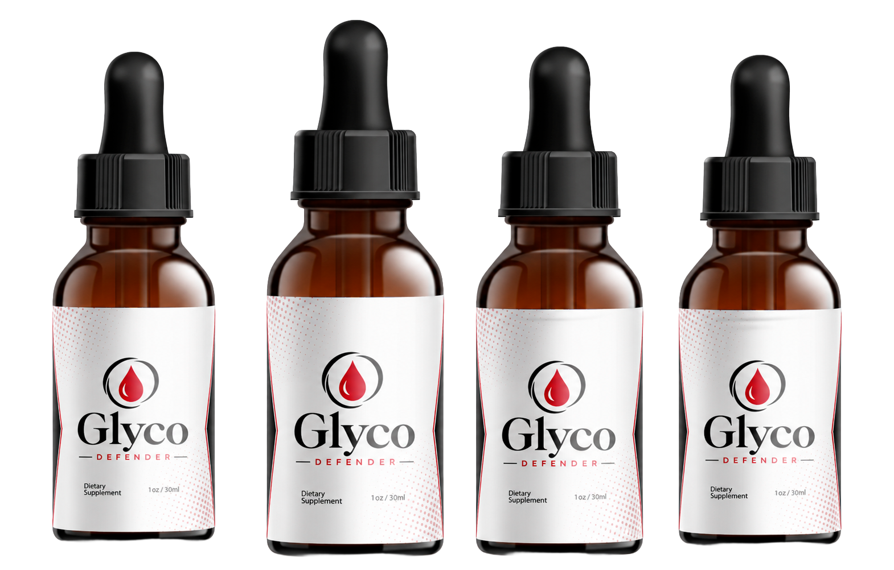
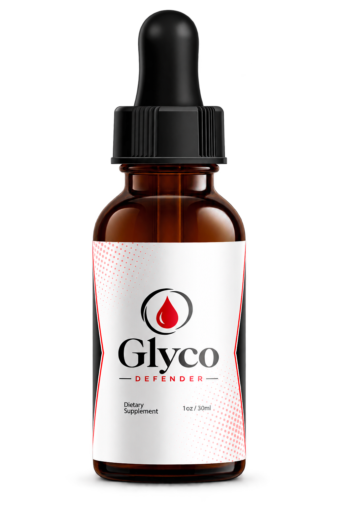
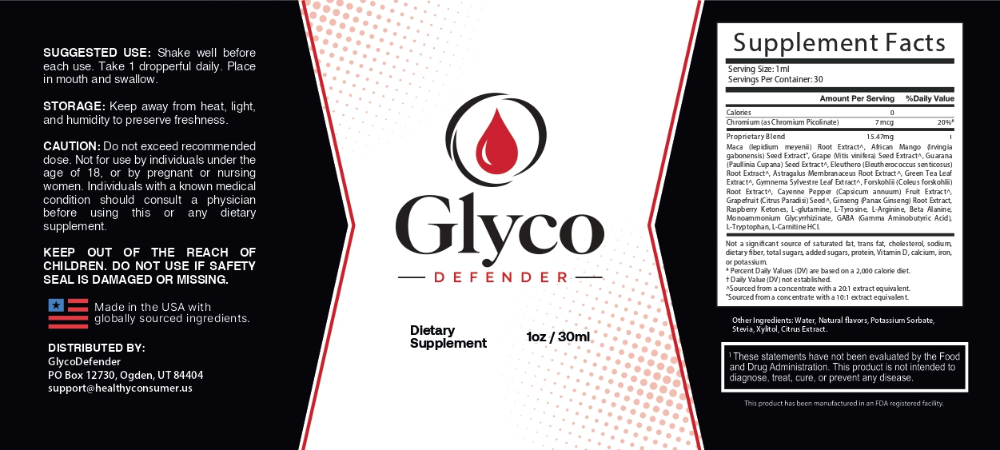
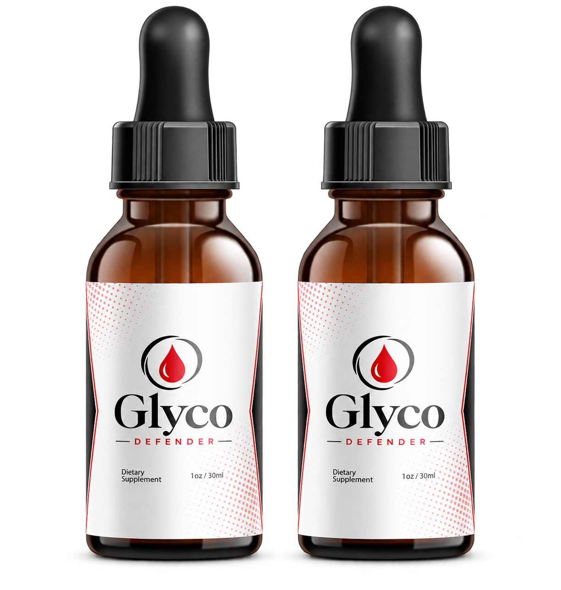
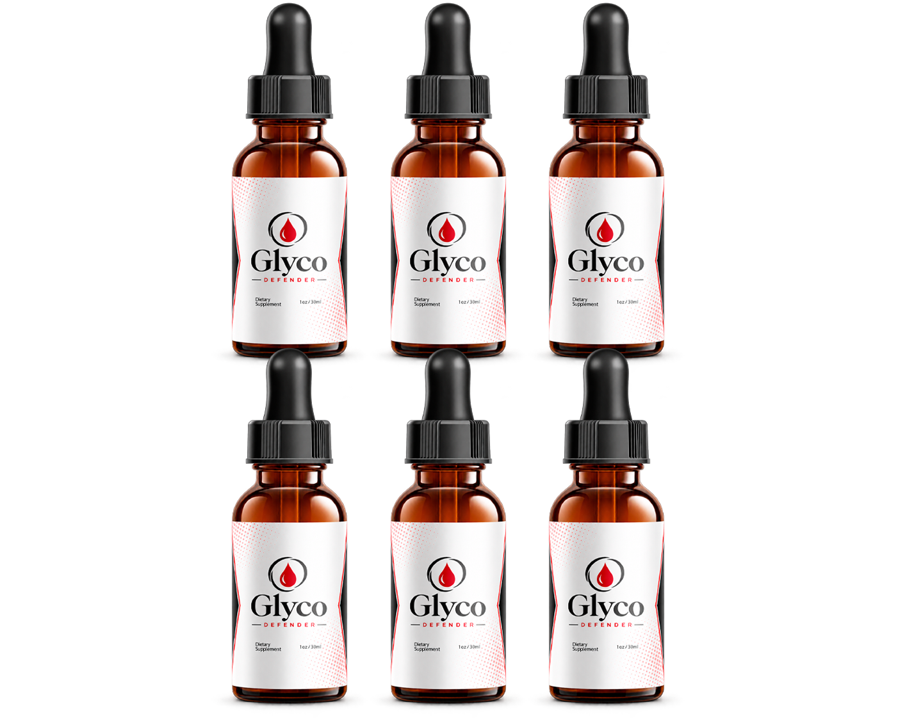
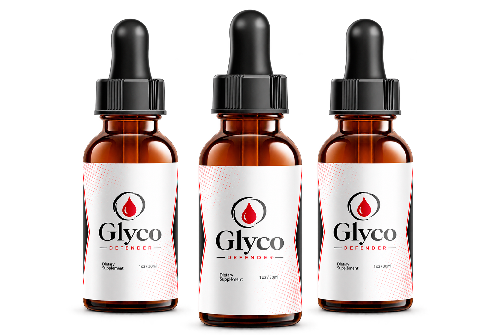

GlycoDefender®: The Liquid Blood-Sugar Support Adults Over 40 Are Switching To
GlycoDefender is a fast-absorbing liquid botanical formula thoughtfully designed to support healthy blood-sugar balance, steady all-day energy, and a healthy metabolism. Just one dropperful a day — with Chromium, Gymnema, Maca, African Mango & Green Tea — helps you feel steady from morning to night, naturally.
GlycoDefender is a research-informed liquid formula combining 20+ botanicals and nutrients to support multiple pillars of metabolic wellness at once. Pricing runs $49–$79 per bottle, 6-bottle orders include 3 free digital wellness guides, and every order is covered by a 60-day money-back guarantee.
60-day money-back guarantee Free US shipping on 6-bottle 3 Free Bonuses

Made In The USA
FDA-Registered Facility
GMP Certified
Natural Ingredients
What Is GlycoDefender™?
GlycoDefender is a fast-absorbing liquid botanical formula thoughtfully designed to support healthy blood-sugar balance, steady energy, and a healthy metabolism — without stimulant jitters, restrictive diets, or hard-to-swallow pills.
This carefully crafted blend brings together 20+ research-informed botanicals and nutrients — including Chromium, Gymnema Sylvestre, Maca, African Mango, Green Tea, Guarana, and more — each selected for its traditional use and growing scientific interest in supporting healthy glucose metabolism.
A formula designed to help your body use sugar for clean energy, tame everyday cravings, and feel steady from morning to night — naturally, one dropperful a day.

6 Pillars of Everyday Metabolic Wellness
Designed to complement a thoughtful wellness routine, providing daily nutritional support for the consistent choices that contribute to steady energy, balanced blood-sugar, and overall well-being.
Healthy Blood-Sugar Balance
Formulated to complement everyday blood-sugar wellness goals as part of a balanced lifestyle built around sensible nutrition and regular activity.
Steady All-Day Energy
Created to complement an active lifestyle and the daily routines that help support a steady, energized approach without stimulant jitters or crashes.
Healthy Metabolism Support
Botanicals like Gymnema, Green Tea, and Maca work together to support healthy metabolic function and balanced glucose metabolism.
Fast-Absorbing Liquid
A convenient liquid formula that absorbs quickly and is easy to take — no hard-to-swallow pills, just one dropperful a day.
Balanced Cravings
Gymnema Sylvestre and other botanicals are traditionally associated with supporting balanced sugar cravings and steady appetite control.
Thoughtful Nutrition
Provides a clean, stimulant-conscious nutritional profile that fits naturally alongside balanced meals and mindful everyday dietary choices.
Simple Daily Support for a Balanced Routine
GlycoDefender doesn't rely on extreme mechanisms. It is designed to complement a thoughtful daily wellness routine by providing nutritional support alongside your existing healthy habits.
Establish Consistency
Take one full dropperful daily — place it in your mouth and swallow, or add it to a glass of water. Make it part of a consistent daily routine that works naturally with your personal wellness goals.
Support Metabolism
The botanical blend works to support healthy glucose metabolism, steady energy, and balanced cravings — addressing multiple pieces of the metabolic puzzle at once.
Build the Bigger Picture
Pair daily supplementation with nutritious food choices, regular physical activity, adequate hydration, quality sleep, and sustainable habits for a well-rounded approach.

20+ Research-Informed Botanicals & Nutrients
GlycoDefender is designed to complement a consistent daily wellness routine. The formula brings together the most respected metabolic botanicals and nutrients — each selected for its traditional use and growing scientific interest.
*Always review the current Supplement Facts panel on the product label for the complete ingredient list, serving size, and exact amounts.
Maca Root
Grown high in the Peruvian Andes, Maca is a time-honored adaptogen traditionally used to support stamina, hormonal balance, and resilience to daily stress — helping the body maintain steady, even energy rather than sharp peaks and crashes.
African Mango
Prized in West African wellness traditions, African Mango seed has drawn scientific interest for its potential role in supporting healthy metabolism and appetite regulation — a natural complement to GlycoDefender's blood-sugar focus.
Grape Seed Extract
One of nature's richest sources of proanthocyanidins — powerful antioxidants studied for their role in supporting healthy circulation and protecting cells from the oxidative stress that often accompanies blood-sugar imbalance.
Guarana Seed
Native to the Amazon basin, Guarana is traditionally used for clean, sustained energy and mental sharpness. In GlycoDefender it supports a naturally active metabolism — helping you feel alert without the harsh spike-and-crash.
Eleuthero Root
Also known as Siberian Ginseng, Eleuthero is a classic adaptogen used for centuries to help the body adapt to stress and sustain energy. Research suggests it may support healthy stamina and a balanced stress response.
Green Tea Leaf
Standardized for EGCG and other catechins, Green Tea is among the most studied botanicals for metabolic support — investigated for its role in promoting healthy glucose metabolism, antioxidant defense, and a gently active metabolism.
Chromium Picolinate
An essential trace mineral extensively studied for its role in supporting healthy insulin sensitivity and glucose metabolism — a foundational nutrient for metabolic wellness.
Gymnema Sylvestre
A legendary Ayurvedic botanical studied for its potential to support healthy blood-glucose levels and reduce sugar cravings through several complementary mechanisms.
Ginseng & More
Additional traditional botanicals including Ginseng and other metabolic supporters round out the comprehensive formula — please review the Supplement Facts panel for the full list.
GlycoDefender vs. Typical Blood-Sugar Supplements
Not every metabolic product is built the same way. Here's how GlycoDefender's comprehensive liquid formula stacks up against typical single-ingredient pills.
| Feature | GlycoDefender™ | Typical OTC Products |
|---|---|---|
| Fast-Absorbing Liquid Formula | ✓ Yes | ✗ Hard-to-swallow pills |
| 20+ Botanicals & Nutrients | ✓ Yes | ✗ Single-ingredient focus |
| Chromium + Gymnema + Maca Combined | ✓ Yes | ✗ Rarely combined |
| Multiple Metabolic Pathways | ✓ Yes | ✗ Single pathway |
| Stimulant-Conscious | ✓ Yes | Varies / Often high caffeine |
| Manufacturing Quality | ✓ USA, FDA-registered, GMP | Often overseas, variable standards |
| Money-Back Guarantee | ✓ 60 days | ✗ Rarely offered |
Choose Your GlycoDefender Package
Every 6-bottle order ships free in the US and includes 3 free digital wellness bonuses. 94% of customers choose the 6-bottle option for maximum results.
2 Bottles
60-Day Supply

Total: $158 + Shipping
- 60-day supply
- 3 Free Bonuses
- 60-day money-back guarantee
- One-time purchase, no rebill
6 Bottles
180-Day Supply

Total: $294 · Free US Shipping
- Lowest price per bottle
- Free US shipping
- 3 Free Wellness Bonuses
- 60-day money-back guarantee
3 Bottles
90-Day Supply

Total: $207 + Shipping
- 90-day supply
- 3 Free Bonuses
- 60-day money-back guarantee
- One-time purchase, no rebill
Shop With Confidence: 60-Day Guarantee
Your order today is protected by our iron-clad 60-day 100% money-back guarantee. If you are not thrilled with how balanced and energized you feel after using GlycoDefender — or if you simply change your mind for any reason at all — let us know any time within the next 60 days and we'll refund every single penny of your investment. No hoops, no questions asked.
3 Free Digital Wellness Guides (With 6-Bottle Orders)
Three premium digital guides — yours instantly when you choose the 6-bottle pack. Accelerate your metabolic wellness journey with these complimentary resources.
Bonus #1: The Everyday Balance Guide
Value: $47
Understanding what your body tells you every day about balance — the simple daily signals, foods, and habits that help keep your energy and blood sugar steady.
INSTANT DIGITAL DOWNLOADBonus #2: The Social Eater's Survival Guide
Value: $57
How to enjoy restaurants, travel, and social occasions without losing your balance — practical swaps and simple strategies for staying steady in real life.
INSTANT DIGITAL DOWNLOADBonus #3: The Identity Shift
Value: $37
What habit science actually says about lasting change — how to make your new steady-energy routines stick for good, not just for a week.
INSTANT DIGITAL DOWNLOADWhat Customers Appreciate About GlycoDefender
Building a consistent wellness routine around balanced nutrition, movement, and thoughtful daily choices can make a meaningful difference in how people approach everyday metabolic well-being.
"I love that it's a liquid formula — so much easier than swallowing pills. I take one dropperful in my morning water and appreciate having a simple wellness option that fits alongside my balanced meals and daily walks."
"After 50, I was tired of mid-afternoon crashes. GlycoDefender has been easy to work into my everyday routine. I focus on consistency rather than extreme changes, and the steady energy support has made a real difference."
"For me, wellness is about the bigger picture. GlycoDefender fits naturally alongside the habits I value most, including nutritious food, staying active, and getting quality rest. The bonus guides were a fantastic addition."
Frequently Asked Questions
If you deal with energy crashes, stubborn cravings, or you simply want to support healthy blood-sugar balance and a healthy metabolism as you age — GlycoDefender was designed with you in mind. It's formulated for adults who want a comprehensive, plant-based liquid approach (not a single-ingredient quick fix) to support steady energy and metabolic wellness.
GlycoDefender is crafted in the USA in a state-of-the-art FDA-registered, GMP-certified facility under strict quality standards, and every ingredient is researched for safety. If you are pregnant, nursing, taking medication (especially for blood sugar or type 2 diabetes), or have a medical condition, consult your physician before using this or any dietary supplement.
Individual results may vary. GlycoDefender's botanical blend is designed to work gently and progressively, so most people prefer to use it consistently as part of their daily routine over a few weeks. Consistency is key.
GlycoDefender is a fast-absorbing liquid built around a comprehensive blend of the most respected metabolic botanicals and nutrients — including Chromium, Gymnema Sylvestre, Maca, African Mango and Green Tea. Unlike single-ingredient pills, GlycoDefender delivers a complete formula that supports multiple pillars of metabolic wellness at once — in a liquid that's easy to take and quick to absorb.
Shake well before each use. Take one full dropperful (1 ml) daily — place it in your mouth and swallow, or add it to a glass of water. For best results, take consistently every day as part of your routine.
We recommend starting with the 6-bottle package for the best value and the longest window to see results. The ingredients in GlycoDefender work by gently supporting your metabolism over time — the full benefits are typically best experienced over 60–90 days of consistent use, and 6-bottle orders include free US shipping and 3 bonus guides.
Yes. There are no hidden charges, subscriptions, or automatic re-bills. You make a one-time purchase — that's it.
We stand behind GlycoDefender with a 60-day money-back guarantee. If you're not satisfied with your experience for any reason, simply contact our customer support team and we'll refund your full purchase — no questions asked.
Published Research Behind The Ingredients
These citations concern research on the individual ingredients at clinical doses, not a clinical trial of the finished GlycoDefender formula itself. All links open in a new tab to external, peer-reviewed sources.
Chromium & Glucose Metabolism
Anderson RA. "Chromium in the Prevention and Control of Diabetes." Diabetes & Metabolism. 2000;26(1):22–27.
View on PubMedGymnema Sylvestre & Blood Glucose
Tiwari P, et al. "Phytochemical and Pharmacological Properties of Gymnema sylvestre." BioMed Research International. 2014;2014:830285.
View on PubMedGreen Tea & Insulin Sensitivity
Liu K, et al. "Effect of Green Tea on Glucose Control and Insulin Sensitivity." American Journal of Clinical Nutrition. 2013;98(2):340–348.
View on PubMedMaca Root & Biological Properties
Gonzales GF. "Maca (Lepidium meyenii): A Review of Its Biological Properties." Evidence-Based Complementary and Alternative Medicine. 2012;2012:193496.
View on PubMedAfrican Mango & Metabolic Parameters
Ngondi JL, et al. "Irvingia gabonensis Seed Extract and Metabolic Parameters." Lipids in Health and Disease. 2009;8:7.
View on PubMedBotanicals & Glucose Metabolism (Review)
Yin J, et al. "Effects of Botanicals on Glucose Metabolism: A Review." Nutrients. 2018;10(10):1361.
View on PubMedPhytotherapy in Diabetes Management
Governa P, et al. "Phytotherapy in the Management of Diabetes: A Review." Molecules. 2018;23(1):105.
View on PubMedAdaptogens & The Nervous System
Panossian A, Wikman G. "Effects of Adaptogens on the Central Nervous System." Pharmaceuticals. 2010;3(1):188–224.
View on PubMedTrusted External Health Resources
Important Context: These statements have not been evaluated by the FDA. GlycoDefender is a dietary supplement and is not intended to diagnose, treat, cure, or prevent any disease. The research cited above concerns individual ingredients and their general wellness roles — it does not represent a clinical trial of the finished GlycoDefender formula. Always consult the full studies for specific clinical dosages and methodologies. Consult a licensed doctor before taking any supplement.
GlycoDefender is not endorsed by, sponsored by, or affiliated with any of the organizations or publications referenced above.
Ready to Make Daily Wellness a More Consistent Habit?
Make GlycoDefender part of a thoughtful approach to everyday metabolic and wellness support. Explore the current packages, claim your free bonuses, and start building a stronger daily routine today.
60-day money-back guarantee Free US shipping on 6-bottle 3 Free Wellness Bonuses
Regular: $99/bottle · Today from $49/bottle
Claim Your Discount Pack